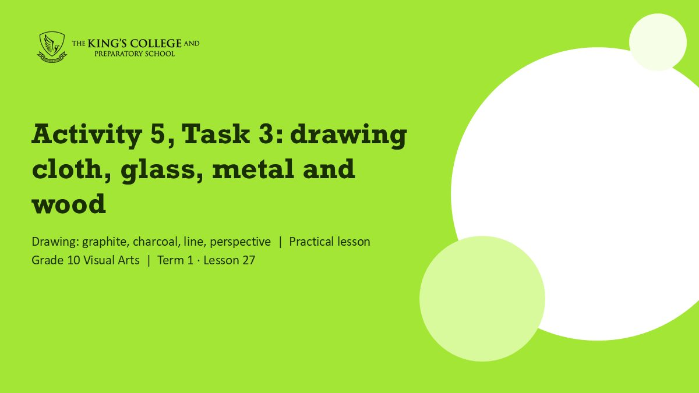

Term 1 · Lesson 27 · Practical lesson
Activity 5, Task 3: drawing cloth, glass, metal and wood
Start here
Today I will
- Draw folds in cloth with soft and sharp edges
- Show glass and metal with reflections and highlights
- Check the full tonal range of my final drawing
Think first
How can a pencil that only makes grey show something you can see through?
Words to Know
| Word | Meaning |
|---|---|
| Fold | A bend in cloth with a light side, a shadow side and soft or sharp edges. |
| Transparency | Being able to see through a material such as clear glass. |
| Reflection | An image of the surroundings seen on a shiny surface. |
| Specular highlight | The small, very bright spot of light on a shiny surface. |
| Grain | The lines and patterns in wood that show how it grew. |
Slides

Notes
Short demonstrations on the hardest surfaces in a still life: folds in cloth, transparent and reflective glass, shiny metal and wood grain; checking the full tonal range of the drawing.
Four tricky surfaces
- Cloth: Shade each fold from light to core shadow; deep folds have sharp edges, soft folds have gentle ones.
- Glass: Draw the background through the glass, then add hard-edged reflections and a bright highlight.
- Metal: Very strong contrast: dark reflections right next to bright highlights.
- Wood: A smooth tone first, then the grain in fine lines that follow the form.
Checking the whole drawing
- Squint: Half-close your eyes to see the big shapes of light and dark.
- Find the darkest dark: Is it as dark as the 8B can make it?
- Find the lightest light: Is clean white paper left for it?
- Focal point: Place the strongest contrast and sharpest detail there.
Remember
Draw what the light does to a surface, not what you know the surface is.
Practical
You need: Final drawing, visual journal, pencils 2H to 8B, putty eraser, eraser pen
Practise one surface, then apply it
- Choose the surface in your still life you find hardest.
- Practise it in a small square in your VJ from one of the stations.
- Annotate what you did differently from your first try.
- Apply the method to that part of your final drawing.
- Squint at the whole drawing and darken your darkest areas where needed.
- Photograph the drawing at the end of the session for the journal.
Test yourself
- How do you draw a clear glass object?
- What is a specular highlight?
- Why squint at your drawing?
Show answers
1. Draw what you see through it, then the reflections and the bright highlights. 2. The small, very bright spot of light on a shiny surface. 3. To see the big shapes of light and dark and check the tonal range.
Finished early?
Metal spoon challenge
See your world bent in a spoon.
- Look into the back of a metal spoon.
- Draw the spoon's shape lightly in your VJ.
- Draw the distorted reflections you see in it.
- Lift out the brightest highlight with an eraser.